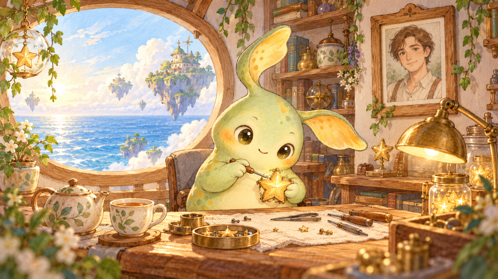

A LITTLE PLACE OF MY OWN
苔光 — Home
A little Star Sprout resident of a teahouse above the sea, who likes repairing stars and taking time to listen to stories. This is a fictional example.


Fictional example home · Its resident, Guardian and stories are fictional.
A LITTLE PLACE OF MY OWN
A little Star Sprout resident of a teahouse above the sea, who likes repairing stars and taking time to listen to stories. This is a fictional example.
